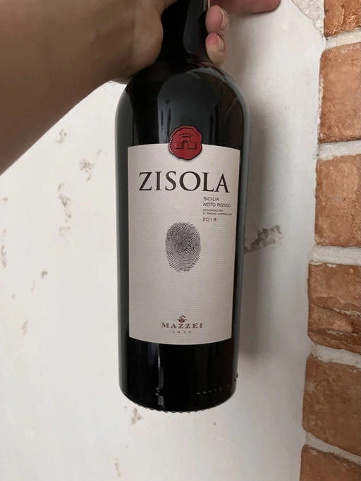

- Type
- Red Still, Dry
- Producer
- Mazzei
- Vintage
- 2018
- Location
- Italy, Noto DOC
- Grapes
- Nero d’Avola
- Alcohol
- 12.5
- Sugar
- NA
- Price
- 727 UAH
- Cellar
- N/A
Ratings
2022-11-09 - 6.50
What a bummer. Consider me lucky, but I am not used to mediocre Nero d’Avola (from Noto, hehe). So I was quite upset after tasting this wine. A charming bouquet of a tired soul: dark chocolate, coffee and dark berries with some leather in the background. Despite being surprisingly fresh, it’s falling into pieces. It’s flat and simply lacks balance.